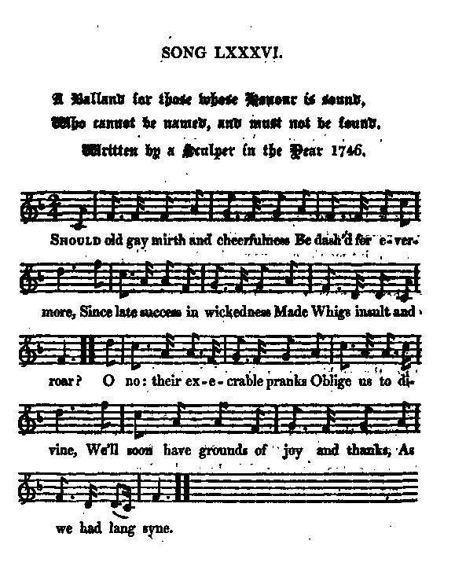
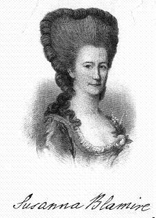

Three Jacobite 'Auld Lang Syne'
Trois versions Jacobites de "Ce n'est qu'un au revoir"
Tune - Mélodie"Auld lang syne" (Pentatonic)
Sequenced by Christian Souchon
|
To the tune: Some of the famous traditional lyrics to this ancient pentatonic tune were collected by Robert Burns and published in the "Scots Musical Museum", volume II, in 1788, are also found with considerable similarity in the ballad "Old Long Syne" printed in 1711 by James Watson, in particular the first verse and the chorus. They read thus: Should Old Acquaintance be forgot, and never thought upon; The flames of Love extinguished, and fully past and gone: CHORUS On Old long syne my Jo, in Old long syne, That thou canst never once reflect, on Old long syne. The tune is a pentatonic Scots melody. Source: Wikipedia. Burns's song was widely spread by the English Freemasonry. In France it was made popular around 1920 by the lyrics composed to the haunting tune by the Jesuit Rev. Jacques Sevin (1882 - 1951), who imported to France and Belgium Lord Baden Powell's boy scout movement: The chorus reads thus: "It's but a 'good bye', brethren..." In modifying this archetype, Burns followed the example of two anonymous Jacobite authors. The tune also inspired the poetess Susanna Blamire: |
 |
A propos de la mélodie: Une partie du texte traditionnel fameux de cet ancien chant pentatonique a été collectée par Robert Burns et publiée dans le "Musée Musical Ecossais", volume II, en 1788. Elle suit de près le texte d'une ballade "Old Long Syne" (le bon vieux temps) publiée en 1711 par James Watson, en particulier, le premier couplet et le refrain. A savoir: Faut-il que tombe dans l'oubli Cette amitié d'un jour Ou que s'éteignent à jamais Les flammes de l'amour? REFRAIN Le bon vieux temps, ma chère Le bon vieux temps, Il faut qu'il t'en souvienne Du bon vieux temps. L'air est une mélodie écossaise pentatonique. Source: Wikipedia. Le texte de Burns fut diffusé par la Franc-maçonnerie anglaise. En France il doit son succès à son adaptation par un Jésuite, le R.P. Jacques Sevin (1882 - 1951), promoteur en France et en Belgique du scoutisme de Lord Baden Powell: Le refrain devient: "Ce n'est qu'un au revoir, mes frères..." En modifiant ce prototype, Burns suivait l'exemple de deux auteurs Jacobites anonymes. La mélodie inspira également la poétesse Susanna Blamire: |
1° Though now we take King Lewie's fee
Bien que payés par le roi Louis
Ascribed to Lochiel's Regiment d'Albanie

|
THOUGH NOW WE TAKE KING LEWIE'S FEE Attributed to Lochiel's Regiment "Le Régiment d'Albanie" (1), 1747 1. Though now we take King Lewie's fee And drink King Lewie's wine, We'll bring the King frae ower the sea, As in auld lang syne. 2. For, he that did proud Pharaoh crush, And save auld Jacob's line (2), Will speak to Charlie in the Bush, Like Moses, lang syne. 3. For oft we've garred the red coats run, Frae Garry to the Rhine, Frae Bauge brig to Falkirk moor, No that lang syne. 4. The Duke may with the Devil drink, And wi' the deil may dine, But Charlie's dine in Holyrood, As in auld lang syne. 5. For he who did proud Pharaoh crush, To save auld Jacob's line, Shall speak to Charlie in the Bush, Like Moses, lang syne. (1) Albany=Scotland (Gaelic:'Alba'). Soon after his arrival in France, the Gentle Lochiel received the command of this regiment in the French service. (2) Auld Jacob's line = James Stuart's lineage |
BIEN QUE PAYES PAR LE ROI LOUIS Attribué au régiment de Lochiel, "le Régiment d'Albanie" (1), 1747 1. Bien que payés par le Roi Louis, Abreuvés de son vin, Ramenons notre Roi chez lui, Tout comme aux temps anciens. 2. Toi, qui terrassas Pharaon Sauvant Jacob (2) et les siens, Parle à Charlie dans le Buisson, Tout comme aux temps anciens. 3. Que de fois nous avons chassé De Glengarry au Rhin, De Baugebrig à Falkirk, l'Anglais, En des temps guère anciens. 4. Que le Duc boive avec le diable, Et goûte à son festin, Si Charlie dîne à Holyrood, Tout comme aux temps anciens.. 5. Toi, qui terrassas Pharaon Sauvant Jacob et les siens, Parle à Charlie dans le Buisson, Tout comme aux temps anciens. Trad Chr. Souchon (c) 2004
(1) Albanie= Ecosse (gaélique: 'Alba'). Peu après on arrivée en France, Lochiel le Gentilhomme se vit confier le commandement de ce régiment dans l'armée française. |
2° A Ballad for those whose honour is sound,
Who cannot be named, and must not be found
Written by a skulker in the year 1746
from "The True Loyalist",page 47, 1779 and from James Hogg's "Jacobite Relics" Volume 2 N°86 page 168, 1821
|
A BALLAD (*) for those whose honour is sound, who cannot be named and must not be found. Written by a Skulker (*) in the Year 1746. 1. Should old gay mirth and cheerfulness Be dash'd for evermore, Since late success in wickedness Made W[hig]s insult and roar? O no: their execrable pranks Oblige us to divine, We'll soon have grounds of joy and thanks, As we had long syne. 2. Though our dear native P[rinc]e be toss'd From this oppressive land, And foreign tyrants rule the roast, With high and barb'rous hand; Yet he who did proud Pharaoh crush, To save old Jacob's line, Our C[harle]s will visit in the bush, Like Moses lang syne. 3. Though God spares long the raging set Which on rebellion doat, Yet his perfection ne'er will let His justice be forgot. If we, with patient faith, our cause To 's providence resign, He'll sure restore our K[in]g and laws, As he had lang syne. 4. Our valiant P[rinc]e will shortly land, With twenty thousand stout, And these, join'd by each loyal clan, Shall kick the German out. Then upright men, whom rogues attaint, Shall bruik their own again, And we'll have a Scots Parli[amen]t, As we had lang syne. 5. Rejoice then ye, with all your might, That did for justice stand, And would give Caesar his due (true) right, As Jesus did command; While terror must all those annoy Who horridly combine The Vineyard's true Heir to destroy, Like Jews (Judas) lang syne. 6. A health to those fam'd Gl[ads]muir gain'd, And circled Der[b]y cross; Who won Fal[kir]k, and boldly strain'd To win Cul[lo]den moss. Health to all those who'll do't again, Who'll (And) no just cause decline. May C[harle]s soon vanquish, and J[ame]s reign, As they ought (did) lang syne. (*) Hogg write "balland" and "Sculper"(?) Source: "The True Loyalist" and (italics) "Jacobite Relics, voL. II. |
BALLADE (*) aux héros à l'honneur sans tache Qu'on ne peut nommer et qu'il faut qu'on cache. Composée par un clandestin (*) de l'année 1746 1. Faut-il que l'ancienne gaîté Soit à jamais bannie Sous prétexte qu'a triomphé L'arrogance ennemie? Leurs effroyables exactions Augurent bien pourtant De prochaines satisfactions, Tout comme au bon vieux temps. 2. Si notre vrai Prince a quitté Ces terres d'oppression Où règne un tyran étranger Pire encor que Néron, Toi, qui terrassas Pharaon Sauvant Jacob et les siens, Parle à Charlie dans le Buisson, Tout comme aux temps anciens! 3. Dieu laisse les traîtres donner Libre cours à leur fureur, Mais fera preuve, étant parfait, D'une juste rigueur. Si nous Lui confions avec foi Notre cause humblement, Il nous rendra le roi, les lois De notre bon vieux temps! 4. Notre bon Prince accompagné De vingt mille fantassins, Avec l'aide des clans loyaux Chassera le Germain. Le juste privé de son bien Le récupérera. Libre sera le Parlement, Comme aux jours d'autrefois. 5. Rassemblez vos forces, amis De la justice. Il faut que Vous rendiez à César ce qui Est à lui, le Ciel le veut! Qu'ils tremblent, les traîtres ignobles Qui voulurent que soit Chassé l'héritier du vignoble, Tel Judas autrefois! 6. Buvons aux vainqueurs de Gladsmoor Venus jusqu'à Derby Qui, vainqueurs à Falkirk un jour, A Culloden ont failli. Buvons à tous ceux qui dédaignent D'abandonner leur foi! Que Charles vainque et Jacques règne Oui, tout comme autrefois! (*) Mots reconstitués: Hogg écrit "balland" et "sculper" inconnu des dictionnaires. (Trad. Christian Souchon (c) 2010) |
|
"I had one copy of this from Dr Traill of Liverpool and another from Mr Hardy of Glasgow, singular title and al. The air is Auld lang syne". Hogg in "Jacobite Relics" Volume 2, 1821 |
"J'ai reçu un exemplaire de ce chant du Dr Trail de Liverpool et un autre de M. Hardy de Glasgow, y compris le titre si caractéristique. L'air est "Auld lang syne" (Ce n'est qu'un au revoir)." Hogg in "Jacobite Relics" Volume 2, 1821 |
|
Note from the "Jacobite minstrelsy" by Robert Malcolm, 1828, page 309 In the original manuscript of this Song, in the possession of Mr Hardie of Glasgow, it is said to have been written by " A Skulker in the year 1746 ;" and if we compare its sentiments and allusions with the facts of that period, it is evidently a graphic transcript of the feelings of the beaten and unfortunate Jacobites. Under all their misfortunes they seem never to have lost hope; and it is highly amusing to perceive how anxiously they looked forward to a day of retribution for their enemies the Whigs. These latter, it must be confessed, displayed in their triumph on many occasions, a degree of vindictive zeal that was not called for on the score of public policy ; and was but little creditable to private feeling. Among various isolated cases of individual malice and oppression, noticed by the writers of the time, a singular one is recorded by the Chevalier Johnstone. While trying to elude pursuit, some time after the affair at Culloden, he had to pass through the moor of Glenilla, on his way to the village of Cortachie. " In travelling this route," says he, " I wished much to have fallen in with the minister of that parish, a sanguinary wretch, who made a practice of scouring the moor every day, with a pistol, concealed under his great coat, which he instantly presented to the breasts of any of our unfortunate gentlemen whom he fell in with, in order to take them prisoners. This iniquitous interpreter of the word of God considered it as a holy undertaking to bring his fellow creatures to the scaffold; and he was the cause of the death of several persons whom he had thus taken by surprise. I had been cautioned to be upon my guard against his attacks, but I was not afraid of him, as I always had with me my English pistols, which were of excellent workmanship, loaded and primed, one in each breeches pocket. I desired, indeed, nothing so much as to fall in with him, for the good of my companions in misfortune, being confident that I should have given a good account of him in an engagement with pistols; for I have all my life remarked, that an unfeeling, barbarous and cruel man is never brave. |
But the punishment of this inhuman monster was reserved for my friend Mr Gordon of Abachie. When we separated, four days after our departure from Rothlemurchus, Abachie resolved to go to his own castle ; and the minister of Glenilla, having been informed of his return, put himself at the head of an armed body of his parishioners, true disciples of such a pastor, and proceeded with them to the castle of Abachie, in order to take Mr Gordon prisoner. The latter had only time to save himself, by jumping out of a wmdow in his shirt. We seldom pardon any treacherous attempt upon our life. Accordingly Mr Gordon assembled a dozen of his vassals, some days afterwards, set out with them in the night, and contrived to obtain entrance into tbe house of this fanatical minister. Having found him in bed, they immediately performed that operation upon him, which Abelard underwent in days of yore, and carried off **** as trophies ; assuring him, at the same time, that if he repeated his nightly excursions with his parishioners, they would pay him a second visit that should cost him his life. In this adventure his wife alone was to be pitied. As for himself, his punishment was not near so tragical as the death on the scaffold, which he had in view for Mr Gordon of Abachie. Doubtless this chastisement completely cured him of Jacobite hunting." The mean vindictive conduct of such men as the minister of Glenilla threw great odium on the whigs, and it is not at all surprising that the wrath of the Jacobites is so frequently expressed against both them and their principles. In vituperating that party, the author of the above old song only echoes the sentiments of a thousand other productions of that day, all of which were provoked by similar proceedings of individuals quite independent of the violence exhibited by Government. The song is an old and favourite song among the Jacobites, both for the sentiment and the air, which bears the same name. The writer's zeal, however, seems to have been greater than his discretion. |
3° The Exile's Return
Le retour de l'exilé
by/par Susanna Blamire
from "Jacobite Relics" Volume 2, Appendix, Jacobite Songs, N°23 page 427
|
THE EXILE'S RETURN MODERN (in 1821) 1. When silent time, wi' lightly foot, Had trod on thirty years, My native land I sought again, Wi' mony hopes an' fears. " Wha kens," thought I, " if friends I left, May still continue mine, Or gin I e'er again shall meet The joys I left langsyne." 2. As I drew near my ancient pile, My heart beat a' the way; Ilk place I passed seemed yet to speak, Of some dear former day. Those days that followed me afar, Those happy days of mine, Which made me think the days at hand, Were naething to langsyne. 3. My ivied towers now met my een, Where minstrels used to blaw, Nae friend stept out wi' open arms, Nae weel kend face I saw, Till Donald tottered to the door, Whom I left in his prime ; An' grat to see the lad come hame, He bore about langsyne. 4. I ran to ilka weel kend place, In hopes to find friends there ; I saw where mony a ane had sat, I hung on mony a chair, Till soft remembrance threw a veil, Across these een o'mine; I shut the door, an' sobbed aloud, To think on auld langsyne. 5. A knew sprung race o' motley kind, Would now their welcome pay, Wha shuddered at my Gothic wa's, And wished my groves away. " Cut down these gloomy trees," they cried, " Lay low yon mournful pine." " Ah, no! my fathers' names are there, Memorials o' langsyne." 6. To win me frae these waefu' thoughts, They took me to the town, Where soon in ilka weel kend face, I missed the youthfu' bloom. At balls they pointed to a nymph, Whom all declared divine; But sure her mother's blushing face, Was fairer far langsyne. 7. "Ye sons to comrades o' my youth, Forgive an auld man's spleen, Wha 'midst your gayest scenes still mourns, The days he ance has seen. When time is past, an' seasons fled, Your hearts may feel like mine, An' aye the sang will maist delight, That minds you o' langsyne." Source: "The Jacobite Relics of Scotland, being the Songs, Airs and Legends of the Adherents to the House of Stuart" collected by James Hogg, volume II published in Edinburgh by William Blackwood in 1821. |
LE RETOUR DE L'EXILE Moderne (en 1821) 1. Puisque trente années de silence A pas de loup ont fui, Rempli de crainte et d'espérance Je reviens au pays. M'ont-ils gardé leur amitié, Tous mes amis d'antan? Et vais-je à nouveau retrouver Les joies du bon vieux temps? 2. Quand j'approchais du vieux manoir, Comme mon cur battait! Tous ces lieux avaient le pouvoir D'évoquer le passé. Ces jours là-bas m'avaient suivi, Jours heureux et charmants! Que pèse le bel aujourd'hui Auprès du bon vieux temps? 3. Aux tours que le lierre envahit Les sonneurs se sont tus. Point de bras ouverts, point d'amis, De visages connus! - Quand, claudiquant, Donald parut, Pleurant, - si jeune avant - Lui qui dans ses bras m'a tenu, Enfant, au bon vieux temps." 4. Et dans tous les lieux familiers Je cherchais mes amis. J'ai vu les murs qu'ils habitaient Et je me suis assis Sur leurs bancs avec, dans les yeux, Mes souvenirs d'antan. Dehors je pleurais, malheureux, Pensant au bon vieux temps. 5. O nouveau peuple bigarré, Aujourd'hui qui m'accueilles, Ces murs gothiques tu les hais, Tu détestes ces feuilles. "Arrache ces arbres austères, Je les trouve affligeants". - "Ils portent les noms de mes pères Tout comme au bon vieux temps!" 6. Pour que je ne soupire plus En ville ils m'ont conduit Mais tous les visages connus Etaient bien défraîchis. Si la débutante du bal Forme un tableau charmant, Un autre reste sans égal: Sa mère au bon vieux temps. 7. "Fils de mes amis d'autrefois, Pardonnez au vieillard De lâcher, entouré de joies, La bride au désespoir. Vos coeurs, un jour, comme le mien Préfèreront le chant, Qui longtemps après se souvient Des jours du bon vieux temps." (Trad. Christian Souchon (c) 2010) |
|
Hogg states "For the air, see song 86 of this volume", but considering the burden he should be mistaken. He adds, on page 451, that this song "was written by the late ingenious Miss Susanna Blamire of Carlisle (1747 - 1794)". The poems of the "Muse of Cumberland" were not collected until 1842. She also anonymously wrote some fine songs in the Scottish dialect. Three of which were set to music by Haydn circa 1800-1803 ( Schottische Lieder - Hoboken XXXIa: 244, 260, 9/bis). The best known one is "The Siller Crown". (Wikipedia). |
 |
Hogg note "Pour l'air, voir le chant 86 de ce volume", mais, compte tenu de la dernière ligne de chaque couplet, ce ne peut être qu'une erreur. Il ajoute, page 451, que ce chant "a été composé par la regrettée Melle Suzanne Blamire de Carlisle (1747 - 1794)." Les poèmes de la "Muse de Cumberland" n'ont pas été réunis dans un recueil avant 1842. Elle composa aussi de jolis chnsons en dialecte écossais. Trois d'entre eux furent mis en msique par Haydn vers 1800-1803 (Schottische Lieder - Hoboken XXXIa: 244, 260, 9bis). Le plus connu est "La couronne d'argent". (Wikipedia). |